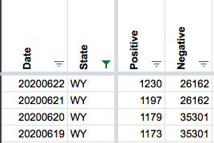
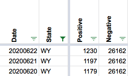

WY began reporting People tested, which made negatives go down
State or US: [State name, or “US” if this is an issue with country-wide data] Wyoming
Describe the problem On 6/19 Wyoming began reporting how many people have been tested for COVID; previously they had only been reporting specimens. Today (6/21) we incorporated the new data into our calculations, which made our “Negatives” number decrease. Might need to fix historicals for 6/20 and perhaps 6/19.
Link to data source https://health.wyo.gov/publichealth/infectious-disease-epidemiology-unit/disease/novel-coronavirus/covid-19-testing-data/
Complicating factors:
Under these circumstances, I think we should leave the 6/19 number as-is. I’m editing the Negatives number for 6/20 to move the big decrease back a day. To avoid a needless tiny drop in negatives, I have to use the same number as from 6/21 (since the positives increased slightly day to day but the total tests number hasn’t been updated by the state).
Before: 
After: 
I also updated the public note to say we took the change starting on 6/20 instead of 6/21.